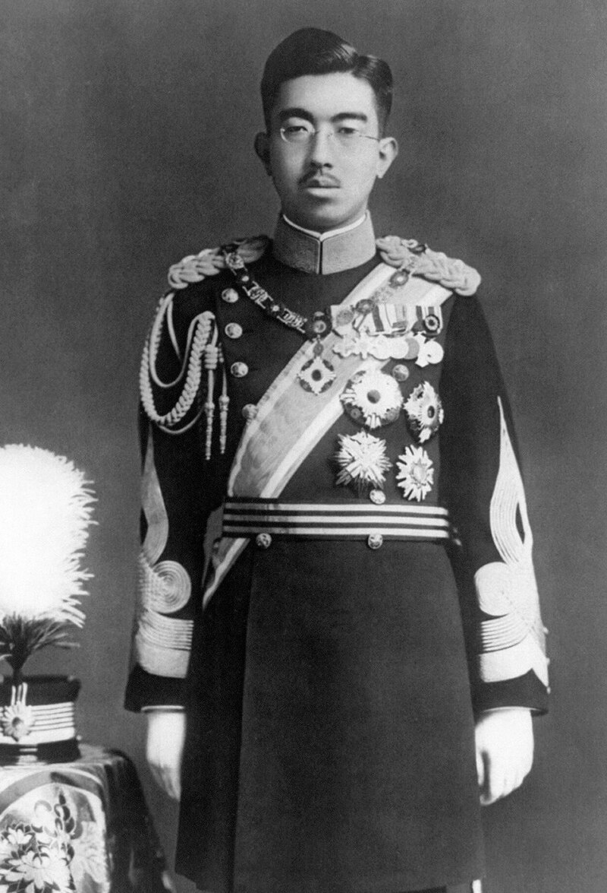

A história do Japão é a sequência de eventos ocorridos no arquipélago japonês, com o surgimento de factos únicos influenciados pela sua natureza geográfica enquanto nação insular, assim como por eventos inculcados por influência do império Chinês que definiram a sua língua, a sua escrita e também a sua cultura política. Por outro lado, o Japão foi ainda influenciado pelo Ocidente, convertendo-se numa nação industrial, mas manteve os laços com a tradição cultural do país. Exerceu uma influência significativa e expansão territorial na região do Pacífico, mas após a Segunda Guerra Mundial estacou.
Em 1192, Minamoto no Yoritomo foi nomeado shogum (ditador militar) do Japão pelo imperador, marcando o início do regime feudal xogunato (ou bakufu) Kamakura, uma instituição militar permanente que governaria durante quase setecentos anos. A corte viu assim o seu poder transferir-se para os samurais sob tal regime militar. A eclosão da Guerra de Ōnin em 1467 provocou uma série de guerras que se estenderam por todo o Japão, num período que culminou em 1573, quando Oda Nobunaga iniciou uma unificação do país que não foi concluída devido à traição de um dos seus principais generais. O imperador foi morto e Toyotomi Hideyoshi vingou a sua morte, completando a unificação em 1590.
O último xogum Tokugawa renunciou ao cargo em 1868, dando início à era Meiji, em homenagem ao imperador Meiji que havia assumido o poder político. Iniciou-se então a modernização do país com a evacuação do sistema feudal e dos samurais, e com a transferência da capital para Tóquio. Um forte processo de ocidentalização teve lugar, e o Japão emergiu no mundo enquanto primeiro país asiático industrializado. Durante o ano de 1941, as relações diplomáticas entre o Japão e os Estados Unidos complicaram-se quando o presidente dos EUA, Franklin Delano Roosevelt, interrompeu o fornecimento de petróleo para o Japão e congelou todos os créditos japoneses nos Estados Unidos. A 7 de dezembro de 1941 o Japão atacou Pearl Harbor, levando o país para a Segunda Grande Guerra enquanto parte das "Potências do Eixo". Apesar de uma série de vitórias iniciais, o Japão veio a sofrer derrotas frente aos aliados, como na Batalha de Midway, alterando consequentemente os papéis na Guerra do Pacífico. Depois dos violentos bombardeamentos de Hiroshima e Nagasaki, o Japão apresentou a sua incondicional rendição, uma vez que estava sob ocupação das forças estadunidenses, as quais desmantelaram o exército, libertaram as zonas ocupadas, o poder político do Imperador foi suprimido e o primeiro-ministro eleito pelo parlamento.
Em 1952 o Japão havia recuperado a sua soberania após a assinatura do Tratado de San Francisco, crescendo economicamente com a ajuda da comunidade internacional. Politicamente, o Partido Liberal Democrata do Japão, de tendência conservacionista, governou quase ininterruptamente no pós-guerra. Com o início da era Heisei, o Japão sofreu uma crise económica nos anos de 1990, enfrentando um declínio da taxa de natalidade e um rápido envelhecimento da população. Em princípios do século XXI, o Japão começou a reformar as práticas que regiam desde o pós-guerra a sociedade, o governo e a economia, o que resultou numa significante mudança política em 2009, com a tomada do poder por parte do Partido Democrático do Japão. Contudo, em finais de 2012, o poder voltou para as mãos do Partido Liberal Democrata.